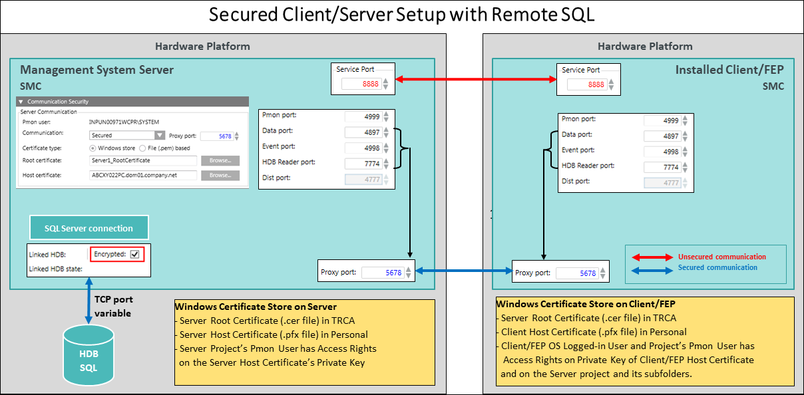

Client/Server Setup
You can set up only one Desigo CC Server to work with one or more clients (as Client/FEP) running on different computers. This allows multiple operators to manage and supervise the same site. First, you must set up the Server and then the client station.

The communication should be secured using security certificates in SMC.
- The logged-on user of the Client/FEP operating system has access to the Server project’s folder.
- The root certificate identifies the source of certificates used for communication. Therefore, the root must be the same for all host certificates and must be available to the Server and all the Clients.
- If multiple clients (Client/FEPs) are connected to a single Server, since the communication should be specific for each Client/Server, separate host certificates generated from the Server root should be used for securing each Client/Server communication.
- The root and communication (host) certificates must have different Subject names.
- The logged-on user of the Client/FEP operating system and the Client FEP project’s Pmon user must have access to the Private key of the Client/FEP host certificate.
- If a remote FEP is connected to the Server, it must have the same Windows key file is available in the Windows Key Store.

NOTE:
The owner of the Desigo CC system is responsible for distributing authorized certificates and keys. This is often done by the IT infrastructure, particularly, if commercial certificates are used instead of the self-signed ones.